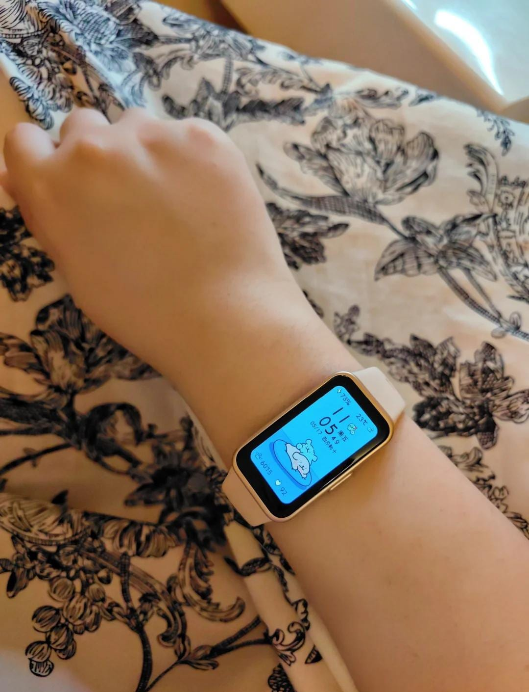

华为手环 9

华为手环 9 主打轻薄与睡眠健康，机身约 14 克、厚度不到 10 毫米，佩戴近乎无感。搭载 TruSeen 5.5 心率监测与升级的睡眠分期、呼吸健康研究功能，典型续航约两周，充电 5 分钟可用一整天，是入门健康手环的稳妥选择。
客观评测
华为手环 9 走的是轻薄路线：约 14 克重量、不到 10 毫米厚度，长时间佩戴负担极小。1.47 英寸 AMOLED 屏幕显示清晰但尺寸有限，抬腕阅读消息略显局促。健康方面搭载 TruSeen 5.5 心率监测与 TruSleep 4.0，睡眠分期与夜间心率、血氧数据在同价位中较为完整，官方亦提供呼吸健康等研究项目。续航标称典型约 14 天，快充 5 分钟约可用一天；缺少独立 GPS 是它与大屏手环的主要差距。
主观点评
它是那种“戴上就忘”的设备——夜里翻身不会硌手腕，早上醒来顺手就有睡眠报告，这份无感体验比堆参数更打动人。睡眠分期与呼吸参考数据看久了确实能反映作息问题。只是屏幕小了些，跑步想看配速还得眯眼，户外轨迹也必须拉着手机出门。作为入门健康手环，它把舒适与续航做到了位。
优点与不足
- 约 14 克超轻机身，睡眠佩戴几乎无感
- TruSleep 睡眠分期与呼吸健康研究是同价位强项
- 快充实用，短充即可回血一整天
- 屏幕尺寸偏小，信息密度有限
- iOS 端功能支持弱于华为手机
- 没有独立 GPS，户外轨迹需带手机
参数规格
| 屏幕 | 1.47 英寸 AMOLED 触控屏 |
|---|---|
| 分辨率 | 194×368 |
| 重量 | 约 14g（不含腕带） |
| 厚度 | 约 9.99mm |
| 电池 | 约 180mAh |
| 续航 | 典型使用约 14 天，重度约 9 天 |
| 快充 | 充电 5 分钟约可用 1 天 |
| 健康监测 | TruSeen 5.5 心率、血氧、睡眠、压力 |
| 睡眠功能 | TruSleep 4.0 睡眠分期与呼吸健康研究 |
| 运动模式 | 100 种运动模式 |
| 防水 | 5ATM |
| NFC | 部分版本支持（以销售版本为准） |
| 兼容 | HarmonyOS / Android / iOS |